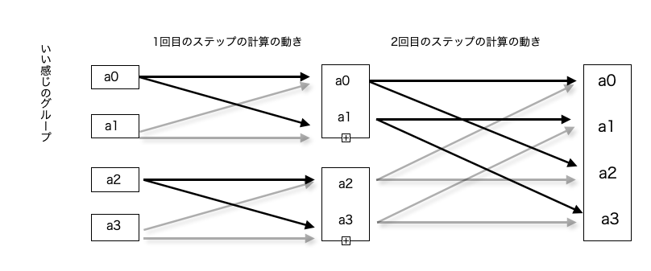

前のページ
高速フーリエ変換というテクニックを勉強しました。コードはこちらの解説を参考にしました(ちゃんと自分で書きましたよ)。
これは、畳み込みという計算を行うときに使うものです。
畳み込みとは,数列 a , b があったとき、
c[t] = Σ a[i]×b[t-i] ..(i<=t) となるような 数列 c を求める計算です。
元の数列のサイズを N とすると、見ての通り c を愚直に計算しようとすると O(N^2) かかりますが、高速フーリエ変換を用いることで、計算量を O(NlogN) まで減らすことができます。
まず、a をフーリエ変換した数列 Fa を求めます。
Fa とは , Fa[t] = Σa[x]×exp(-i×(2tπx/N)) であるような数列です。
よくわかりませんが、そうなんです。
ここで、上記の数列 c をフーリエ変換したものを Fc とします。
すると、 Fc[t] = Fa[t]×Fb[t]になります。なるんです。
また、フーリエ変換には逆変換が存在し、フーリエ変換を行った数列に逆変換をかけると、元の数列の戻ります。
つまり、c は Fc を逆変換したら求まります。
フーリエ変換をまとめようと思ったのですが、長いし、直感的にまとめれなさそうなので諦めます。
ここでは、私が後から見直したときに思い出せるように、実装の方針だけ簡単にまとめます。
かなり雑にまとめますので、下の図も見ながら頑張って思い出してください。
行列の積の形を変形
フーリエ変換は、行列の積として表すことができますが、行列積を計算するときに愚直に計算するとO(N^2)かかってしまいます。
そこで、行列の中身に注目して、式変形してみると、いい感じのグループ が 規則的 に並んでいるではありませんか!!
そこで、本来 N^2 回の計算が必要だった行列積は、( N回の計算が必要な行列 × logN 個 ) の行列積に分解することができました。
いい感じのグループとは
いい感じのグループも普通の正方行列なのですが、その中身に注目すると実はこのグループを使う行列積は愚直に計算せずとも O(行列の縦の長さ) で求まることがわかります。
規則的に並んだ いい感じのグループのサイズの合計は数列 a のサイズと同じになるので、数列 a 全体にいい感じのグループをかけようとすると合計で N 回の計算が必要です。
いい感じのグループ(行列)の例 :
計算するために並べ替え
logN 個の計算をするため、元の数列の順番を並べ替える必要があります。
結論を言うと、0-index で i 番目の要素は、0-index で i をビット反転した位置にきます。
ビット反転とは、i を二進数で表したときの各桁を見て、0 なら 1 に、1 なら 0 に反転したものです(ex. 10011 <-> 01100)。
logN 個に分割した行列積の計算
計算は logN 回のステップに分けられます。
x 回目のステップでは、いい感じのグループのサイズが2^xとなります(x>=1)。x 回目のステップでは、今見ている数列から、x+1 回目のステップで使うための数列を計算します。
logN 回のステップがすべて終了して、最後に残った状態の数列がフーリエ変換をした数列になります。
x 回目のステップにおいて、数列 a の各項にかける係数は , 2^x で割った余りが同じような項ではすべて同じになるため、
数列全体の中で, p×2^x + j の形の項に注目します。
また、x 回目の積において、いい感じのグループは全部で縦に N/2^x 個並んでいます。
p×2^x + j の p とは、上から p 個目のグループを指します。
2^xで割った余りが同じ項にかける係数が同じなのも、x回目の計算で見るいい感じのグループの中身がすべて同じだからです。
- for(int j = 0 ; j < 2^x ; j++){//グループの中を移動
- 係数 et を宣言
- for(int p = 0 ; p < N ; p+= 2^x){//数列全体のうち、他のグループ(同じ係数を持つもの)を探して、次のステップの数列を計算する。
- p*2^x + j の項から次のステップの数列を計算
-
- }
- }
と、このようにすると、
2^xで割った余りが同じになるような項では係数：et を使い回すことができて効率的です。
また実は、一つ目のfor文の j の範囲は、一工夫加えることによって j < 2^(x-1)とできます。なぜなら、いい感じのグループの前半部分を調べる際に、後半部分の計算もついでにできるからです。
フーリエ変換の逆変換
逆変換も存在しますが、これはほとんど一緒の操作をするだけです。
大雑把に言うと、各ステップの係数の符号を反転し、最終的に求まった数列の各項を数列のサイズ: N で割るだけです。
畳み込み
Fc[t] = Fa[t]×Fb[t] となります。
なお、ここで Fa , Fb , Fc とは a , b , c をフーリエ変換したものとします。
求めたい数列は c で、 c[t] = Σa[i]×b[t-i] を満たすものでした。
実はこの数列 c は、Fcを逆変換したものです。
ここまでで、フーリエ変換も逆変換も高速でできるようになったので、あとは Fc を愚直に計算するだけです。
以下はいい感じのグループと、logN 回のステップの図です。計算前に元の数列を並べ替えることに注意。

以下はこちらの問題でverifyしたコードです。
- //include
- //------------------------------------------
- #include<iostream>
- #include<vector>
- #include<queue>
- #include<map>
- #include<stack>
- #include<string>
- #include<complex>
- using namespace std;
- const long long INF = 1e18;
- const double PI = 3.141592653589793;
- /*
- aをフーリエ変換(逆変換)
- aのサイズは2の冪乗
- */
- vector<complex<double>> FFT(vector<complex<double>> a , bool inv = 0){
- //aのサイズ(2の冪乗)
- int sz = a.size();
- //aのサイズのbitの高さ(ビット反転で使う)
- int bitsize = log2(sz);
- /*
- バタフライ演算のための並び替え : iに対して、iをビット反転した数値 : j を計算し、a の i,j の位置をスワップする。
- */
- for(int i = 0; i < sz ; i++){
- int j = 0;
- //aのサイズは2の冪乗なので、0-indexを考えたとき、2^bitsizeは範囲外,よってbit < bitsize
- for(int bit = 0 ; bit < bitsize ;bit++){
- //iのbit番目の桁が立っているなら、反転した位置のビットをjに立てる
- if(i&(1<<bit)) j |= (1<<(bitsize-1-bit));
- }
- //まだ見てない位置なら位置を入れ替える
- if(i<j)swap(a[i] , a[j]);
- }
- /*
- バタフライ演算を始めます(合計で約bitsize回の計算をする)。
- x回目のバタフライ演算では、演算の各グループのサイズは2^xになっている。
- x = 0 は初期状態のこと
- */
- for(int x = 1 ; x <= bitsize; x++){
- /*
- 演算グループのサイズはGroupSizeだが、実際の計算ではその半分のGroupSize_Halfしか使わない
- なぜなら、後半半分の計算は前半半分の計算のついでにできるから
- */
- int GroupSize = (1<<x);
- int GroupSize_Half = GroupSize/2;
- /*
- 係数がGroupSize_Half周期で同じになることに注目して、値を遷移させる。
- GroupSize_Half * K + j ... K >= 0 であるようなindexに対して、 係数:et が同じなので使いまわせる
- */
- for(int j = 0 ; j < GroupSize_Half ; j++ ){
- complex<double> et;
- if(inv)et = polar(1.0 , (2*PI)/(GroupSize)*j);
- else et = polar(1.0 , (2*PI)/(GroupSize)*j*-1);
-
- /*
- xステップ目のすべてのグループに対して、GroupSize_Half*k + j からの遷移を計算する
- */
- for(int k = 0 ; k < sz ; k+= GroupSize){
- complex<double> p , q;
- p = a[j+k];
- q = a[j+k+GroupSize_Half]*et;
- //前半の計算
- a[j+k] = p + q;
- //後半の計算
- a[j+k+GroupSize_Half] = p - q;
- }
- }
-
- }
- if(inv){
- for(int i = 0 ;i < sz ; i++){
- a[i]/=sz;
- }
- }
- return a;
- }
- /*
- 数列がvector<double>バージョンのFFT
- */
- vector<complex<double>> FFT(vector<double> a , bool inv = 0){
- vector<complex<double>> a_(a.size());
- for(int i = 0 ; i < a.size() ; i++ )a_[i] = complex<double>(a[i],0);
- return FFT(a_ , inv);
- }
- /*
- a,bを畳み込み
- --> c[t] = Σ a[i]*b[t-i] .. (0<=i<=t) となるような数列：c を計算する
- */
- vector<double> convolution(vector<double> a , vector<double> b ){
- //畳み込みの結果のサイズ
- int sz = a.size() + b.size() - 1;
- //計算に使うサイズ
- int t = 1;
- while(t < sz)t*=2;
- a.resize(t);
- b.resize(t);
- vector<complex<double>> A,B;
- vector<complex<double>> C(t);
-
- A = FFT(a,false);
- B = FFT(b,false);
- for(int i = 0 ; i < t ; i++){
- C[i] = A[i]*B[i];
- }
- C = FFT(C , true);
- //メモリがもったいないのでaをreturn用に使い回し
- vector<double>(sz).swap(a);
- for(int i = 0 ; i < sz ; i++){
- a[i] = C[i].real();
- }
- return a;
- }
- int main(){
- int n ;
- cin >> n;
- vector<double> a(n+1,0) , b(n+1,0);
- for(int i = 0 ; i< n ; i++){
- cin >> a[i+1] >> b[i+1];
- }
- vector<double> c = convolution(a,b);
- for(int i = 0 ; i < 2*n ; i++){
- cout << (long long )(c[i+1] + 0.5)<< endl;
- }
- return 0;
- }